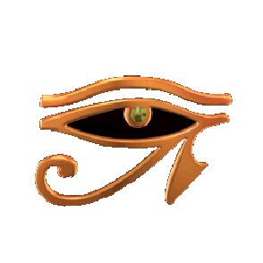

Well... this isn't really my personal page. I have a Jekyll page that I use. This is here because of an assignment that requires this to exist. My actual page is here https://timoiv.com If you want to contact me, send an email to my KU email: aranjo.timo@ku.edu.
Here is some random image I found off the internet. It is the Eye of Horus. It probably has some symbolic meaning, but I don't know what it is: 
Also, this is a color-keyed video I made using ffmpeg: